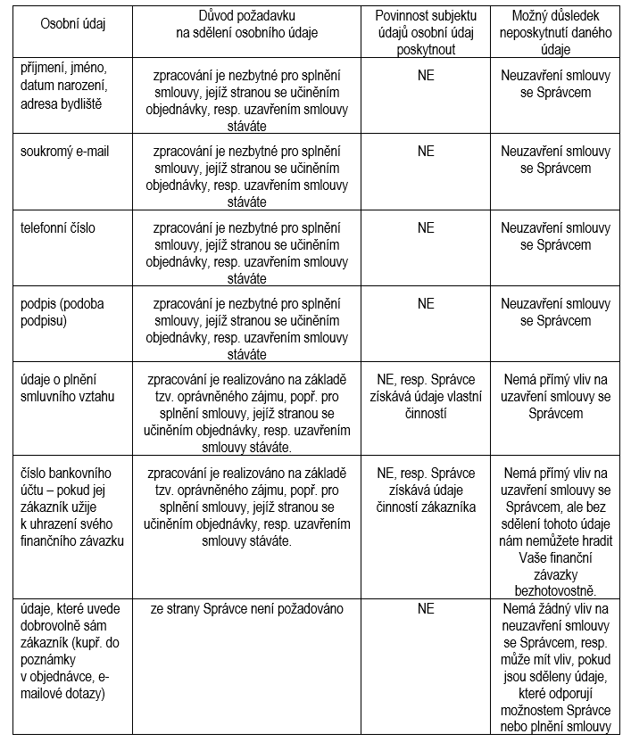

Sample text. Click to select the Text Element.
Sample text. Click to select the Text Element.
V rámci České republiky se od 25.5.2018 vztahuje na ochranu osobních údajů primárně Obecné nařízení o ochraně osobních údajů (General Data Protection Regulation, GDPR), jehož účelem je chránit práva občanů proti neoprávněnému nakládání s jejich osobními údaji.
Správce KOS Trading, a.s. se sídlem Stará Ježnická 1556/1, Pod Bezručovým vrchem, 794 01 Krnov, IČO: 60793562, zapsaný v OR, vedeném Krajským soudem v Ostravě, sp. zn. B 1059 (dále jen „Správce") a jeho zaměstnanci mají respektovat zásady, na kterých GDPR stojí:
Na základě výše uvedeného Správce informuje subjekty osobních údajů, zejména Vás - naše ctěné zákazníky, o tom, jaká práva jim dle GDPR náleží.
Právo vznést námitky proti zpracování svých osobních údajů, založeném na oprávněném nebo veřejném zájmu správce.
Kdy dochází, resp. může dojít ke zpracování osobních údajů v rámci činnosti KOS Trading, a.s.
Na webových stránkách Správce mají naši zákazníci možnost se přihlásit k odběru našeho bezplatného newsletteru. Ten informuje především o aktuálních nabídkách Správce, přináší praktické rady, informace o dění u Správce a může obsahovat i další obchodní sdělení. Nezbytným údajem pro registraci je Vaše e-mailová adresa.
Zpracování Vašich osobních údajů je založeno na Vašem svobodném udělení souhlasu podle článku 6 odst. 1 písm. a) GDPR, kdy zároveň potvrzujete, že jste si přečetl(a) si a porozuměl(a) zásadám ochrany osobních údajů a přejete si dostávat newsletter. Souhlas s odběrem newsletteru můžete kdykoliv a bez udání důvodů odvolat odhlášením z odběru v rámci každého newsletteru, aniž je tím dotčena zákonnost zpracování založená na souhlasu uděleném před jeho odvoláním.
Vaší emailovou adresou disponujeme tak dlouho, dokud budete k newsletteru přihlášeni. V návaznosti na Vaše odhlášení odběru dojde rovněž k výmazu Vaší e-mailové adresy. Další uchování se může uskutečnit jen v jednotlivých případech, pokud to vyžaduje zákon.
V rámci splnění ze strany Správce mohou být příslušné osobní údaje pouze v nezbytném rozsahu a výhradně pro příslušný účel zpřístupněny rovněž různým subjektům kupř.:
Předání do třetí země se nepředpokládá, ledaže subjekt údajů je z třetí země nebo si nechá newsletter zasílat do třetí země.
Abychom mohli našim zákazníkům poskytovat služby, musíme s nimi rovněž uzavírat smlouvy. Jedním z náležitostí jakéhokoli smluvního vztahu, resp. smlouvy je také jasná identifikace smluvních stran, včetně Vás.
Co do rozsahu tak budeme zpracovávat jen osobní údaje poskytnuté přímo Vámi, a to:

Osobní údaje většinou získáváme přímo od Vás prostřednictvím našeho webu, e-mailu nebo při komunikaci s Vámi. Ve většině případů zpracováváme osobní údaje, které nám poskytnete v rámci objednávání zboží nebo služeb nebo při komunikaci s námi.
Osobní údaje přímo od Vás nezískáváme sledováním Vašeho chování na našem webu.
Předmětné osobní údaje mohou být shromažďovány i elektronicky, v rámci informačního systému. Případné automatizované zpracování osobních údajů bude pouze v základní formě a pro účely vytváření databází (kupř. pro vytváření přehledů o objednávkách jednotlivých zákazníků, správa pohledávek) - dle názoru Správce důsledky takového zpracování nejsou pro subjekt údajů negativní.
Zpracování Vašich osobních údajů je založeno na nezbytnosti zpracování osobních údajů pro splnění smlouvy, jejíž smluvní stranou jste coby subjekt údajů, nebo za účelem přijetí opatření na žádost subjektu údajů před uzavřením smlouvy [viz článek 6 odst. 1 písm. b) GDPR].
Doba, po kterou budou osobní údaje uloženy: údaje budou uloženy min. na dobu trvání vzájemného smluvního vztahu a na dobu, po kterou je možno uplatnit vůči sobě práva a povinnosti (tedy dle délky promlčecí doby, resp. trvání soudního či jiného řízení, v nichž jsou vzájemná práva/povinnosti předmětem posouzení), k níž se připočte doba jedno roku. Je-li Správce plátcem DPH, je dle současné legislativy povinen uchovávat všechny daňové doklady po dobu 10 let od konce zdaňovacího období, ve kterém se uskutečnilo zdanitelné plnění (jiné účetní doklady nebo účetní záznamy, kterými účetní jednotky dokládají vedení účetnictví, účetní knihy, odpisové plány, inventurní soupisy, účtový rozvrh, přehledy pak po dobu 5 let počínajících koncem účetního období, kterého se týkají. Použije-li Správce coby účetní jednotka účetní záznamy i pro jiný účel než uvedený v § 31 odst. 1 zákona č. 563/1991 Sb., o účetnictví, a to zejména pro účely trestního řízení, opatření proti legalizaci výnosů z trestné činnosti, správního řízení, občanského soudního řízení, daňového řízení, výběru archiválií ve skartačním řízení nebo mimo něj, nebo pro účely sociálního zabezpečení, veřejného zdravotního pojištění anebo pro účely ochrany autorských práv, postupují po uplynutí dob úschovy uvedených v § 31 odst. 2 zákona o účetnictví dále tak, aby byly zajištěny požadavky vyplývající z jejich použití pro uvedené účely; v případě, kdy účetní jednotky použijí účetní záznamy k těmto účelům, platí všechna ustanovení tohoto zákona týkající se účetních záznamů obdobně.
Likvidace předmětných osobních údajů bude provedena skartací a vymazáním souborů v případě, že osobní údaje byly poskytnuty či uchovávány v elektronické podobě.
Primárním příjemcem Vašich osobních údajů jsou naši pracovníci, a to vždy s příslušnou kompetencí a jen v jejím rozsahu - zejm. osoby vyřizující objednávky, zajišťující diagnostiku a opravu, osoby zajišťující fakturaci/příjem plateb nebo komunikaci se zákazníky apod., popř. třetí osoby výše uvedené zajišťující pro Správce, a to včetně servisní organizace subjektů třetích osob (autorizované servisy).
Osobní údaje vedle Správce mohou zpracovávat a užít za určitých podmínek a v co nejmenším rozsahu i tyto osoby a zpracovatelé:
Předání do třetí země se nepředpokládá, ledaže se smlouva týká třetí země nebo osoby z třetí země.
V areálu Krnovských opraven a strojíren s.r.o., kde sídlí naše provozovna, je provozován kamerový systém, jehož účelem je zaznamenání pohybu osob s cílem zvýšit tak bezpečnost a ochranu majetku.
Co do rozsahu bude zaznamenávána Vaše vizuální podoba a rozsah Vašeho pohybu v rámci areálu Krnovských opraven a strojíren.
Zpracování Vašich osobních údajů je založeno na oprávněném zájmu Správce ve smyslu čl. 6 odst. 1 písm. f GDPR.
Správce považuje záznam pomocí kamerového systému za oprávněný zájem, který chrání nejen majetek ve vlastnictví či správě Správce, ale i zdraví, bezpečnost a majetek jeho zaměstnanců a třetích osob (zejména Krnovských opraven a strojíren s.r.o. či vlastníka nemovitostí v areálu) - jedná se tedy o ochranu proti vandalismu, krádežím, vloupáním a zamezení vstupu nežádoucích osob do objektů Správce. Nezbytnost zaznamenávat pomocí kamer osoby pohybující se v areálu je dána i s ohledem na potřebu zajištění ochrany know-how a obchodních tajemství provozovatele areálu i dalších v prostorách působících subjektů. Monitorování je prováděno v takové míře, která nezasahuje do základních práv a svobod lidí, zejména tedy práva na soukromí, a monitorované subjekty jsou přehledně a transparentně informovány o tom, že je prostor snímán kamerami. Zákazníkovi či jakýmkoliv třetím osobám nehrozí přímá ani nepřímá újma, neboť kamery nezasahují do jejich soukromí. V návaznosti na výše uvedené lze shrnout, že výhody spojené se záznamem pomocí kamerového systému převažují nad dopadem do práv a svobod zákazníka. Opatření provedená ze strany Správce ve vztahu k záznamům kamerových systémů lze považovat taktéž za bezpečnostně vyhovující.
Doba, po kterou budou osobní údaje uloženy: max. 6 týdnů.
Likvidace předmětných osobních údajů se provádí automatickým vymazáním přepisem novým záznamem při naplnění kapacity záznamového zařízení.
Primárním příjemcem Vašich osobních údajů je Správce, a to jen v případě, že by kamerový záznam byl zcela nezbytně potřeba - kupř. prošetření podezření z páchání trestné činnosti.
Osobní údaje vedle Správce mohou zpracovávat a užít za určitých podmínek a v co nejmenším rozsahu i tyto osoby:
Předání do třetí země se nepředpokládá.
created with
Website Design Software .